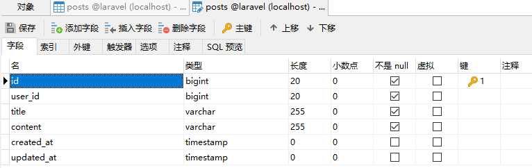

laravel的Model
在对laravel的理解一文中，结尾提到了一下Model
然后考虑到篇幅限制，以及暂时用不到，所以就没有做更详细的阐述
说到Model，就必然离不开数据库，因为Model就是一个后端应用的数据层。他的位置应该是在控制器与数据库之间，负责的部分是直接与数据库进行交互，返回数据给控制器。
在知道model是干什么的情况下，我们需要做什么呢？
我们现在的数据库还没创建好，所以首先创建好数据库
注意，如果使用mysql的话，关于数据库的部分配置在.env文件内:
1 | DB_CONNECTION=mysql |
内，配置好用户名和密码之后，我们需要做的就是创建一个和上面DB_DATABASE配置项同名的数据库。
如果使用navicat或者phpAdmin可能会比较轻松，如果使用mysql命令的话大概是登陆进数据库之后create database laravel
然后剩下的部分，都通过php代码完成。
假设存在这样的一个表：

这个表有6个字段，分别是
id作为每一条数据的唯一识别编号user_id用来标识与这个post相关联的用户title用于记录一篇文章的标题content用于记录一篇文章的内容created_at和updated_at用于记录这篇文章的创建时间和上一次更改的时间
当我在把一个东西(这里以一篇文章为例)存进数据库的时候，其实就是这样的操作，想一下需要储存这个东西的哪些数据，然后列出来，其实就设计了这么样的一个表。
现在我们知道一条文章的数据有哪些属性了，我们该怎么在数据库里建立这么一个表呢？答案是通过laravel的migrate机制，也就是迁移。
我通过在根目录执行一条命令：
1 | php artisan make:migration create_posts_table |
然后就能观察到我的项目根目录下的/database/migrations下多了一个文件，文件名应该是2020_0x_xx_xxxxxx_create_yyyyy_table.php,x和你创建这个迁移的时间有关，yyyy就是执行命令make:migration输入的参数，按照规范需要创建一个表的时候一般create_<表名>_table，其中表名按照规范一般是储存的东西的小写负数形式，比如posts。
创建完的文件是这样的
1 |
|
这是一个继承了Migration的类，他的里面有两个方法，一个是up一个是down，其中up是在执行迁移的时候调用的，down是在回滚迁移的时候用的。
然后需要修改的部分就是
1 | Schema::create('posts', function (Blueprint $table) { |
被包在function中间的部分，按照前面的表结构，我应该这么写：
1 | Schema::create('posts', function (Blueprint $table) { |
至于为什么这么写自己比较与观察，然后查看官方文档的数据库迁移部分
设计好表之后执行
1 | php artisan migrate |
关于前面提到的回滚：比如当我创建了一个表，并且已经迁移进了数据库发现少写了一些属性并且代码没有上传的时候，就可以执行
回滚上一个迁移
然后能看到
1 | Migrating: 2020_01_30_110448_create_posts_table |
告诉我迁移成功了。
数据表创建完成了，然后我们就需要为这一个储存的东西定义一个Model
正如对laravel的理解一文的结尾所说，一个应用可能会有很多种数据呢，比如用户啦，比如文章啦。laravel不可能帮我们尽善尽美的都定义好，所以这个数据模型的模板就需要我们自己来定义。
1 | php artisan make:model Post |
然后就能看到在项目的根目录下的/app内多了一个Post.php，初始内容如下
1 |
|
这个东西就是我们会经常用到的laravel的Model也叫Eloquent模型啦
然后关于Model的更多东西请一定要去官方文档看，因为这东西他用处很多很多，我只讲讲最基础的增删改查什么的，这个的文档在：https://learnku.com/docs/laravel/6.x/eloquent/5176
这里给大家介绍一个东西叫做tinker，这是一个交互式编程的环境，可以通过这条命令进入
1 | php artisan tinker |
跟数据库有关的有什么东西呢都？无非就是增删改查啦。
增
单条数据的增加我们可以这样
1 | $post = new Post; |
当然也可以这么写:
1 | Post::create([ |
但是这么写的话是一种批量赋值的手法，需要我们在model内定义什么样的属性允许批量赋值，比如:
1 | class Post extends Model |
就是，除了id和user_id之外的东西都可以批量被赋值给新的post
同样也可以声明一个$fillable来声明哪些属性是允许被批量赋值的，简单地说的话
$guarded 是黑名单而 $fillable 是白名单
查
当需要根据id来查找一条数据，也就是获取一个Post实例：
1 | $post = Post::find($id); |
当需要根据某个条件来查找一条数据，比如title
1 | //获取一条数据,也就是一个Post实例 ->first() |
1 | //获取所有数据,返回的会是一个集合,可以通过foreach进行遍历 ->get() |
1 | //也支持多个条件的说 |
删
删除十分简单，在前面的查找获取到了某个实例之后，只需要调用
1 | $post->delete(); |
即可删除数据
改
修改同样十分简单，直接修改实例的属性然后save即可，例：
1 | $post->title = 'bugu bugu bugu'; |